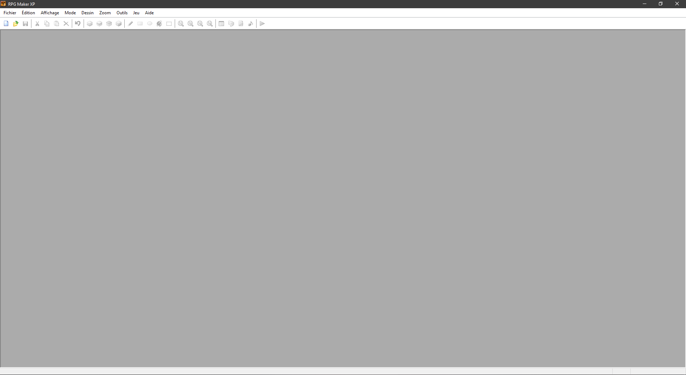
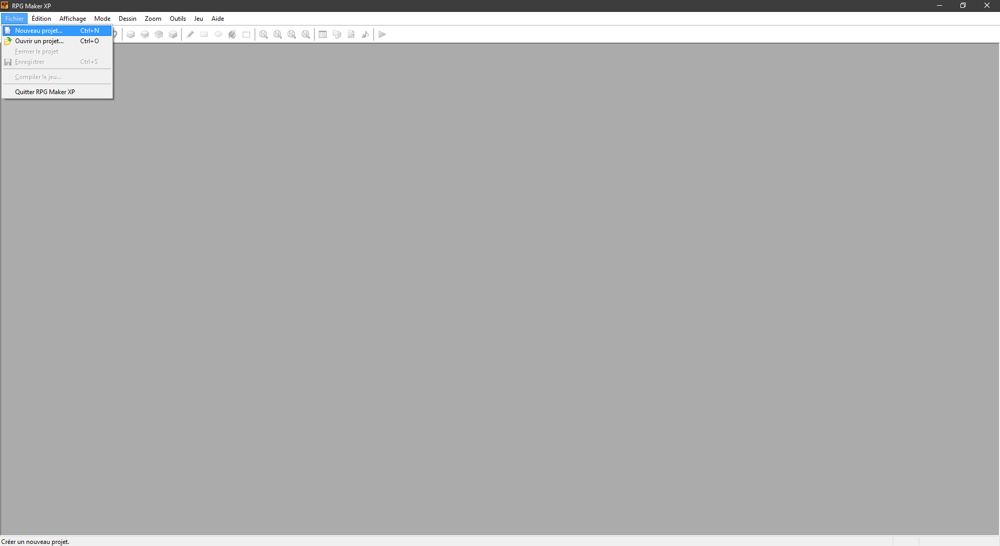
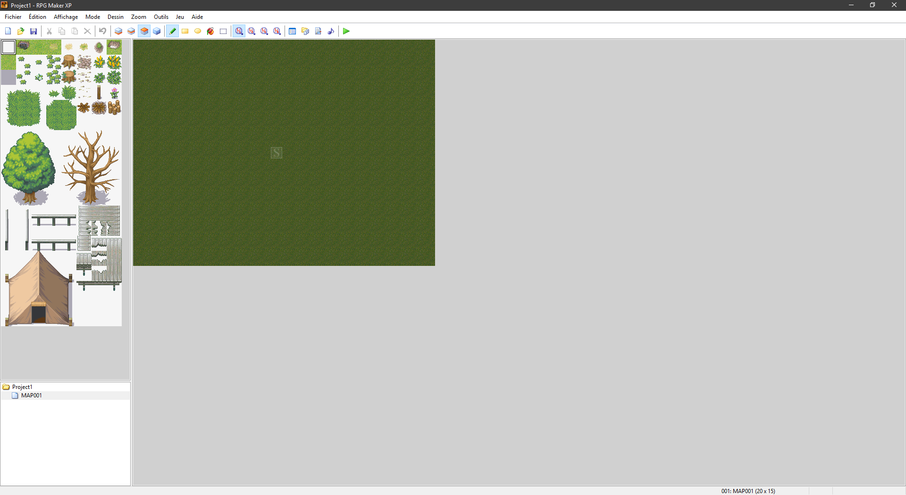
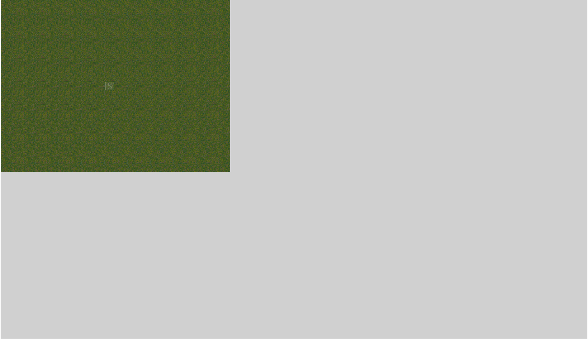
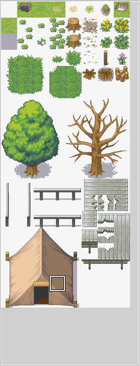
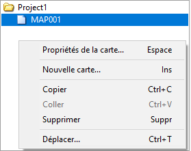

RPG Maker XP est un logiciel développé en 1992 par ASCII et Enterbrain, et qui permet de créer des jeux-vidéos, principalement des jeux-vidéos de rôle. Le logiciel se veut très simple, il comprend un éditeur de carte, un langage de script simple pour coder des événements ainsi qu'un éditeur de batailles. Il inclue des graphismes par défaut, donc pas besoin d'avoir de notions en graphisme ou dessin pour créer un jeu. Ca s'appelle des "tiles", des petites images représentant des éléments graphiques (lits, fenêtre, mur...), l'ensemble de ces tiles sont regroupés dans un grand ensemble nommé "tilesets".
Voici la page que vous devez voir la première fois que vous ouvrez le logiciel. Pour démarrer un projet il vous suffit de vous rendre en haut à gauche dans l'onglet "Fichier" puis "Nouveau Projet". (Vous pouvez également directement cliquer sur la page vierge pour créer un fichier.) Pour l'instant nous n'allons pas nous occuper des paramètres, cliquez juste sur "OK". Voici la page sur laquelle vous devez être une fois le logiciel lancé.
 "Fichier" > "Nouveau Projet"  Une fois cela fait vous devez arriver à un résultat similaire.  Comme dit précédemment le logiciel se veut simple, et nous pouvons diviser l'écran en 4 parties distinctes, premièrement le plus grand rectangle à droite représente la carte de votre jeu (MAP en anglais) c'est là que vous allez créer votre monde et que votre personnage pourra parcourir.  Deuxièmement la partie en haut à gauche représente le tileset utilisé c'est-à-dire le type de graphisme que vous utiliserez, de base celui utilisé est le tileset "001: Plaines", la version XP propose jusqu'à 50 tilesets différents ! (Sans compter ceux que vous pouvez importer depuis ici !)  Troisièmement la partie tout en haut représente les outils que vous pouvez utiliser, de gauche à droite nous avons ; l'outil permettant de créer un fichier, celui qui permet de l'ouvrir et celui qui permet de le sauvegarder. Les 4 suivants servent respectivement à couper, copier, coller et supprimer, le prochain outil est très utile, il s'agit du "Annuler" (ou "Undo" en anglais), il permet comme son nom l'indique d'annuler la dernière action ou modification effectuée. Les 4 icônes suivantes sont probablement les plus importantes, il s'agit de la notion de "couche", (ou de "layers" en anglais), cela signifie que la création de carte s'effectue en 4 couches distinctes, mais nous verrons ça plus en détail à la page 2. L'outil crayon permet de dessiner sur la carte, tout comme l'outil rectangle, cercle, remplissage ou sélection. Les 4 outils suivant permettent de zoomer ou dézoomer, puis les 4 suivants permettent d'accéder à des fonctions plus pousser que nous verrons à la page 4. Le dernier outil sert à exécuter le programme et à lancer le jeu. Quatrièmement la partie en bas à gauche permet de créer de nouvelles cartes ou de modifier celles qui sont déjà présentes, en modifiant le tileset ou la largeur et la hauteur. Il suffit de faire un clique droit sur "MAP001" et cliquer sur "Propriétés de la carte..." 